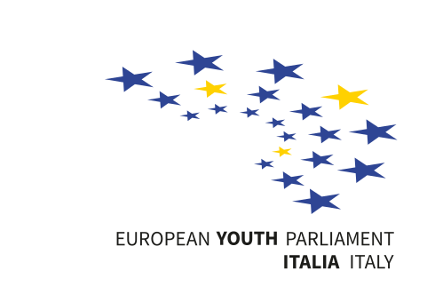
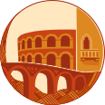

Lunch & dinner
Menus and allergen information will be published once confirmed. Please communicate dietary requirements through the official form.


RS Verona2026For delegates & staff
Everything you need during RS Verona 2026: the schedule, venues and menus, downloadable materials, and who to contact if something comes up. This page is kept up to date until the last day of the session.
Programme
Times may be adjusted during the event. Check this page for the latest version.
22 Oct 2026
23 Oct 2026
24 Oct 2026
25 Oct 2026
Participant library
Booklets and academic resources will be available here as soon as they are published.
Venues, menu & practical info
Menus and allergen information will be published once confirmed. Please communicate dietary requirements through the official form.
Venue addresses, maps and transfer instructions will be added to the Welcome Booklet and this page.
Check-in times, room arrangements and house rules will be shared with participants before arrival.
Contacts